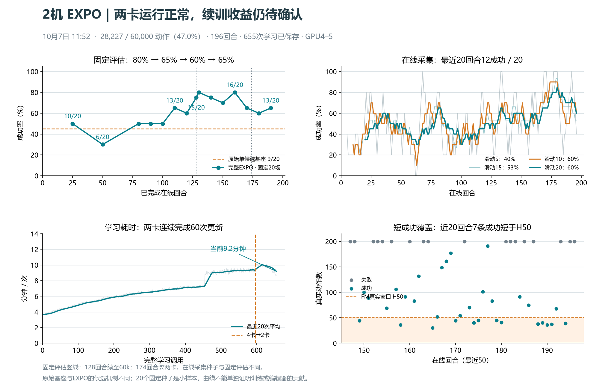
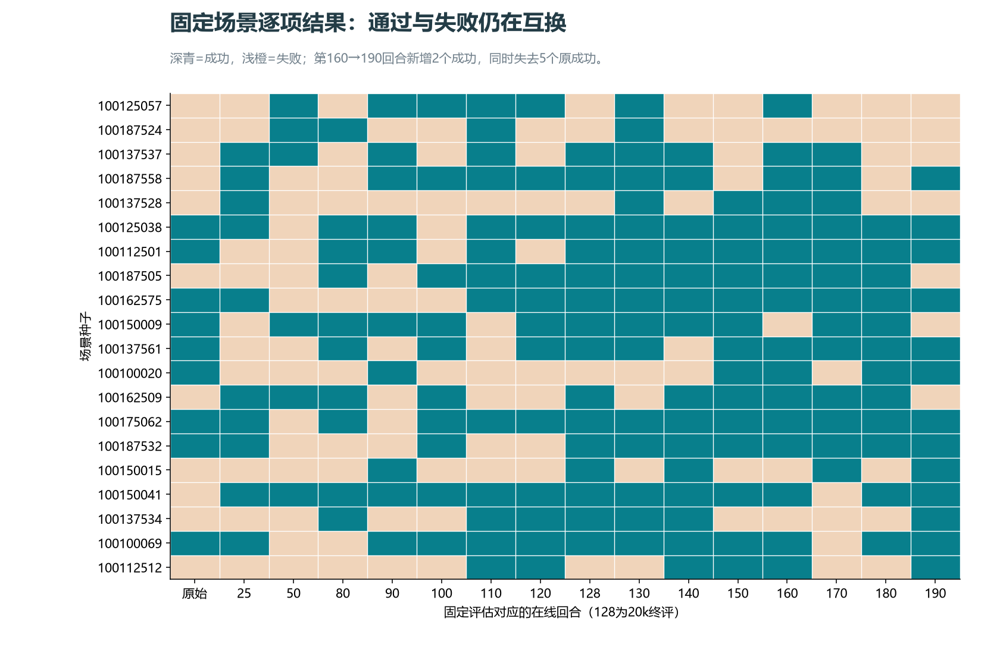
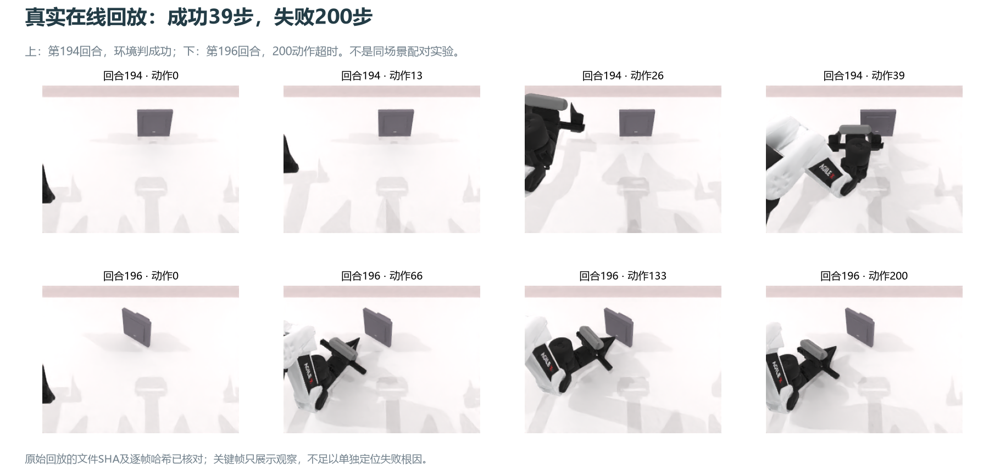

现场：2026-10-07 11:52，北京时间。只读审计，未启停任务、调参或新增GPU评估。
GPU4–5运行，owner3008973与driver3503441身份匹配，心跳21秒，无新失败回执，17份运行源码逐文件核同。两卡已连续完成60次更新，以及180/190回合各20场完整固定评估。


| 显存 / 内存 | GPU4约76.2GiB、GPU5约65.3GiB；主卡余量约3GiB。进程RSS35.8GiB、峰值38.8GiB、swap0；主机可用约1.72TiB。驻留/缓存不能直接等同泄漏。 |
|---|---|
| 实际GPU范围 | EXPO的计算与图形仅4–5；0–3未见进程上下文，底层读数各4MiB。6/7已由Q-U/Q-Norm使用。 |
| 吞吐 | 最近20次551.4秒/学习调用；切换前26次561.6秒。两卡刚切换20次603.6秒；负载/缓存变化下的现场比较，不是严格性能基准。按占卡数×耗时算，该学习阶段GPU秒约减半。 |
| 时间结构 | 取完整第176–195回合区间：学习78.8%，额外固定评估9.9%，采集动作阶段3.0%，保存/reset等8.2%。只加速采集的收益有限。 |
| 剩余粗估 | 近期2285动作/11.84小时，约193动作/小时；若速度保持，剩31,773动作约165小时（约7天）。成功轨迹长短、评估和后续变速会明显改变估计。 |
| 原配置保持 | N1采集；N4×5评估20场，每10回合；B64；8原+8编辑候选；Q20、FM/editor/温度各1；每40动作积学习额度；C10/H50/ODE10；编辑幅度0.2；latest/last1滚动保存。 |
| 磁盘 | 根盘约66.5%已用、余30.1GiB；数据盘余6.06TiB，本轮未清理。 |
| Checkpoint | latest/last1各8.79GB，ZIP目录均可读，latest回执655次更新、finite=true；没有额外加载8.8GB模型重做恢复。减卡前595次学习的两份备份也保留。滚动保存并不保留每10回合历史最优权重。 |
|---|---|
| 在线回放 | 196条、28,227动作，约19.69GB；392个数据/manifest文件身份全部匹配。全部内容未重复读盘哈希，另抽取194/196两条做完整文件SHA与逐帧校验。 |
| 示范与训练窗口 | 50条既有成功示范、4863帧；在线Q窗口26,367、FM窗口4,449。100条在线成功中22条不足H50，不能进入当前完整H50的FM；近20回合12条成功中7条被排除。它们仍进入Q回放。 |
| 评估与日志 | 16份固定评估（含初始、20k终评及历次评估），种子hash一致；655条学习记录与196条在线成败可重绘。所有记录的数值指标有限，冻结prefix没有梯度。 |
| 行为素材 | 当前run没有mp4；真实回放保留三相机图像/动作/终止标志。本页展示两条主相机关键帧；图像不是新跑的评估。 |
| 云端与本地 | 执行源码和此前切换证据已发布；本次图、统计、产物审计作为轻量证据补同步。checkpoint/回放及完整原始日志仍留服务器。 |

第194回合指令：Direct the right arm to operate the rectangular switch with slanted sides。第196回合：Engage with the light tan rectangular switch smooth finish manually。两条场景/指令不同，不能从截图判定整体失败类型比例。
α已从1升至1.227，实际编辑熵约−129.69，接近当前±0.2范围的上限−128.28；目标仍−70。这个尺度不匹配仍存在，适合作独立对照，尚无证据证明它导致近期成功率下降。Q/FM/编辑器梯度均非零有限，低Q loss也不等于任务已学好。
当前唯一协调器为/data/chenyiteng/deployment-20261006/rlt-q-signals-g67-v1/coexist/current.json。旧RLT现在等待EXPO和Q-U/Q-Norm全部释放；代码还要求rlt-return-validation.json的计算/图形绑定验证，本次现场该回执尚不存在。因此不能再表述成“EXPO一结束RLT立即顶上”。本轮仅指出这个待办，未抢占其他任务或修改归还链。
| 回合 | 成功 | 评估时间 |
|---|---|---|
| 原始基座 | 9/20 | 28.3分钟 |
| 25 | 10/20 | 30.6分钟 |
| 50 | 6/20 | 30.7分钟 |
| 80 | 10/20 | 30.5分钟 |
| 90 | 10/20 | 30.8分钟 |
| 100 | 10/20 | 31.2分钟 |
| 110 | 13/20 | 30.9分钟 |
| 120 | 12/20 | 30.4分钟 |
| 128 | 15/20 | 30.6分钟 |
| 130 | 16/20 | 36.8分钟 |
| 140 | 15/20 | 36.7分钟 |
| 150 | 14/20 | 36.8分钟 |
| 160 | 16/20 | 36.9分钟 |
| 170 | 13/20 | 38.7分钟 |
| 180 | 12/20 | 36.6分钟 |
| 190 | 13/20 | 34.1分钟 |
证据：统计与产物索引 · 在线逐回合数据 · 学习标量 · 矢量总览。完整本地现场snapshot/detail不作为训练修改。